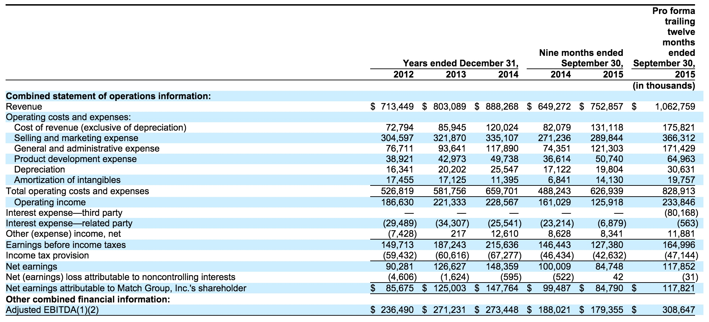

财报地址
财报

业务
我们的使命
人人内心渴求浪漫。在一段情感关系中，约会、恋爱、婚姻，浪漫因子的注入，都使其更精彩。激活你的浪漫潜能，为生活添动能，我们有志于此。
Establishing a romantic connection is a fundamental human need. Whether it's a good date, a meaningful relationship or an enduring marriage, romantic connectivity lifts the human spirit. Our mission is to increase romantic connectivity worldwide.
我们是谁
Match Group是全球领先的交友产品供应商。经营了45多个品牌组合，包括Match, OkCupid, Tinder, PlentyOfFish, Meetic, Twoo, OurTime and FriendScout24，每一个产品定位，增加我们的用户找到浪漫的连接的可能性。通过多个品牌的组合，我们提供量身定制的产品，以满足不同的喜好的用户。我们目前提供38种语言的约会产品遍布190多个国家。截至2015年第三季度，有大约5900万的月活跃用户（MAU），约470万付费会员。
我们的目标市场包括在北美，西欧和其他国家的所有成年人谁是不在一个承诺的关系，谁有访问互联网，这一点，根据研究由美国在七月委托2015，我们估计在约511百万人。在这一人群中的消费者偏好不同的显着，部分的人口统计，地理，宗教和情感的影响。其结果是，市场对约会产品是分散的，并没有单一的产品已经能够有效地服务的约会类别作为一个整体。
鉴于广泛的消费者的喜好，我们的品牌组合策略的类别，我们试图提供约会产品，共同呼吁消费者的最广泛的频谱。我们相信，这种方法最大限度地提高我们捕捉到更多的用户的能力，证明了我们的MAU和付费会员数的年复合增长率63%，截至2011年9月30日和截至2015年9月30日23%季度的季度之间，分别。我们越来越多地应用一个集中的学科知识，最佳实践和技术在我们的品牌以提高增长，降低成本和提高盈利能力。这种方法使我们能够快速地引入新的产品和功能，优化营销策略，降低运营成本，更有效地部署在我们的组织的人才。
随着对移动技术的发展趋势，我们经历了一个有意义的转变，我们的用户群，从桌面设备到移动设备，和现在提供的移动体验上我们所有的约会产品。在截至2015年9月30日的季度，备考的好多鱼的收购，我们在2015十月完成，我们的73%的新用户注册了我们的产品通过移动渠道，相比只有35%在截至2013年9月30日的季度。
这种转变使我们到达用户之前曾被证明是难以捉摸的群体，如千年观众；例如，火种，只有一个移动产品，已经能够进入这个观众在过去几年里迅速。此外，在以前的面向桌面的产品一样，转向手机有LED产品的应用增加，移动用户在有效率高于平均访问我们的产品做的那些用户谁访问我们的产品在桌面。根据移动分析公司AppAnnie获得的数据，在截至2015年6月30日的三个月中，我们经营的收入最高的五位约会的应用程序在苹果App Store和谷歌Play商店在北美国的四，和三的世界排名前五，在每一种情况下，备考为好多鱼收购，我们完成了2015年10月28日。此外，据AppAnnie的火种，我们的产品是最下载的移动交友应用在北美国为同一时期。
基本上所有我们的约会收入是直接来自我们的用户。这个收入来自经常性的会员费的绝大多数，通常提供一个特定的时间内获得无限的一系列特点，并从à点菜功能的平衡，在用户支付的费用为一个特定的动作或事件。我们的每一个品牌都提供免费和付费功能的组合，针对其独特的社区。在品牌基础上的品牌，我们的货币化的决定，寻求优化的用户增长，收入和用户相关的社区的活力和生产力。除了直接从我们的收入，我们产生的收入来自在线广告主支付给我们的大观众。
除了我们的交友业务，我们还经营一个非交友业务，通过我们在教育行业的所有权的普林斯顿审查。普林斯顿审查提供了各种各样的考试准备，学术辅导和大学辅导服务。
我们的收入从713.4百万美元增加2012至803.1美元，然后以888.3百万美元，2014，同比分别增长13%和，分别为2013和11%。截至2015年9月30日的九个月，我们的收入增加了16%，比在2014至752.9元的可比时期。2012，2013，2014，截至2015年9月30日的九个月中，我们产生236.5美元经调整EBITDA百万百万，271.2美元，273.4美元和179.4美元分别百万百万，百万，186.6美元的营业收入，221.3百万美元，228.6美元和125.9美元分别百万百万，百万，和90.3美元的净收入百万，126.6美元，148.4美元和84.7美元分别百万百万。看到“选择历史相结合的财务及其他资料”的描述我们如何定义调整后的EBITDA及经调整EBITDA的对账营业收入。
市场机会
与人联系，促进人际关系是影响每个人幸福的重要因素。其结果是，约会市场为Match Group呈现一个显着的机会。我们认为我们的潜在市场是在北美国，西欧和其他国家在世界上谁是不承诺的关系，谁有访问互联网的所有成年人，这一点，根据研究由美国在七月委托2015，我们估计在约511百万人。
在发达经济体的国家，如美国，我们的可寻址市场一直在扩大，由于人口老龄化，在老年人和增长的互联网使用的人口占总人口的百分之一。在新兴经济体，如印度和中国，在可寻址市场的增长是由类似的因素推动的，最显着的增长在互联网接入。总体而言，我们的可寻址市场预计将从约511百万人口增长约672百万人口的2019，假设在每个国家的单一人口增长符合该国总人口的增长速度。
在数字世界中启用约会
在计算机和移动设备的扩散之前，传统的人际关系受到了社会各界、地理和时间的限制。今天，通过互联网和移动技术已经大大扩展了人们可以建立关系，创造新的互动和发展浪漫关系的方式。
我们相信，交友产品作为传统的会议方式的一种自然延伸，为用户提供了许多好处，包括：
•扩展选项：
约会产品为用户提供了大量的志同道合的人，否则他们就不会有机会见面。
•效率：
搜索和匹配功能，以及可在约会产品上的配置文件信息，允许用户在短时间内筛选大量的选项，增加用户将与某人联系的可能性。
•更舒适和控制：
与人们见面的传统方式相比，约会产品提供了一个使人接触新的人不舒服的环境。这会导致许多人在约会过程中会是被动的参与者，这会发挥更积极的作用。
•便利性：
互联网的本质和移动设备的扩散允许用户在任何时间与新的人联系，不管他们是哪里。
在选择一个交友产品时，我们相信用户可以考虑以下属性：
•品牌识别：
品牌是非常重要的。用户通常联想到一个更高的成功率和更高的安全级别的高级约会品牌。
•成功经验：
成功的其他用户通过口头推荐吸引新用户。成功的经验也推动重复使用。
•社区识别：
用户通常寻找约会产品，提供一个社区，用户最强烈的关联。通过选择一个约会产品，专注于特定的人口，宗教，地理或意图（例如，随意约会或更严重的关系），用户可以增加的可能性，他们将与某人的联系，他们可以识别。
•产品功能和用户体验：
用户往往倾向于约会，提供的功能和用户体验，与之产生共鸣的产品，如基于问题的匹配算法，基于位置的功能，线下活动或搜索功能。用户体验也是用户界面类型驱动的（例如，滑动与滚动），一个特定的组合的免费和付费的功能，易用性和安全性。用户希望每一个互动的约会产品是无缝的，直观的和安全的。
我们的竞争优势
我们相信以下属性为我们提供了竞争优势的约会业务：
•强势品牌认知：
强势品牌是人们在选择交友产品时考虑的主要因素之一。品牌驱动的有机流量，在搜索引擎和应用商店的排名显着影响，并增加付费营销的效率。在传统的“约会”范畴中，强大的国家认可的品牌需要很多年的建立。根据得到的数据的研究，对五大约会在北美国的独立品牌意识，四是我们所拥有的，在北美国单打89%识别我们的品牌时，品牌列表中至少有一个约会。根据这相同的数据，70%的单身人士在西欧至少承认我们的一个品牌时，显示一个约会品牌列表。事实上，我们的产品在13个不同的国家在北美国和西欧的所有交友产品中排名最高的。
•规模：
在本地市场的一个约会品牌经营的用户规模显著，提供最有效的用户体验的优势。大规模提供更多的机会，为潜在的连接，并导致更好的结果为一个品牌的用户。这反过来又推动了一个更高频率的口头建议，从满意的用户，这是然后乘以一个更广泛的基础上的用户，创建一个加强循环，规模驱动器进一步扩大。我们目前拥有和经营的五大品牌在北美国独立的意识来衡量的四。我们的成员在我们的产品，在截至2015年9月30日的季度每天发送超过75百万的消息平均给其他成员，并在我们的火种产品，截至2015年9月30日的一个月期间，用户通过“刷卡”超过1.4亿用户每天平均。我们的产品有LED到大约8.4百万的关系开始，大约2.5百万的婚姻，在北美国在过去的四年中，每一个备考好多鱼。我们认为，这种规模是我们主要品牌的竞争优势之一。
•多品牌的客户获取方法：
我们目前有更多的品牌比任何其他参与者在我们的类别。通过研究现在委托我们2015年七月的一项研究，我们拥有和经营（PlentyOfFish）四大品牌在调查前30天以上在北美国的受访者使用；第五个最常用的品牌有是我们第四个最常用的品牌使用率50%。我们的多品牌的方法使我们能够提供约会产品，吸引了广泛的用户。通过定位我们认为是最相关的品牌，每个用户段，我们能够实现更大范围的整体客户获取成本更低。此外，我们也越来越多地为我们的产品在我们的产品广告。当这样的广告是成功的，我们的产品之一的用户成为我们的产品的另一个用户，产品已经获得了一个新的客户没有增量成本。因为本产品的第二个产品将不得不从事自己的营销努力，以获得客户，我们能够降低客户的平均成本在我们的整个投资组合。截至2015年9月30日的季度，我们的比赛品牌和美国北部的亲和品牌产生约11%的新注册通过这种类型的交叉推广。
•规模驱动的客户获取能力：
我们有效地利用在线和离线广告，以提高品牌意识，推动新的用户注册。我们悠久的历史和显着的规模，使我们能够开发分析和运作的方法，我们认为是更先进的比我们的任何一个单一的品牌将能够发展为一个独立的公司。我们相信，没有任何其他人在这一类的方法，我们的支付客户的收购努力的规模。
•盈利能力：
通过品牌的基础上，我们不断测试和定制我们的产品，以确定哪些功能，以提供一个收费，并提供免费的功能。在我们的经营历史的过程中，这些测试已经帮助我们开发了显着的专业知识，最大限度地提高收入，同时保持一个品牌的能力，以吸引新的用户，并保持一个充满活力和活跃的用户群体。我们相信，我们的方法，以货币化是更先进的比我们的任何一个单一品牌将能够发展自己的。
•通过广告的能力：
由于我们的用户群的规模和多样性，广告客户可以达到约59百万人在我们的品牌截至2015年9月30日的季度平均。我们提供广告主的能力来定制他们的广告，根据分析，我们收集有关用户的利益和行为。我们相信我们的规模和分析驱动营销使我们更具吸引力的广告主。我们的产品的目标市场，也为广告主提供访问几个令人垂涎的人口群体，包括我们的火绒产品已经渗透有效的千禧一代。
•致力于产品开发：
每一个品牌都有一个强大的产品路线图。产品开发和创新通常是品牌的具体和重要的资源是专门为我们的各种产品的不断改进。因此，我们有多个产品开发团队在任何特定的时间在一个宽度，我们相信，不能复制任何我们的单一品牌作为独立实体的各种功能。
•共享学习：
同时保持每个品牌的独特个性，我们促进知识和经验，在营销和客户的获取，货币化和产品开发领域的投资组合。虽然每个品牌一般是负责在这些领域的进步，每个人的能力，迅速利用其他品牌的成功，并避免他们的失败，大大增加了每个品牌的成功率，在每个品牌的业务性能的关键驱动力。
•有能力培养新的业务：
我们有一个约会成功引入新品牌历史。例如，我们在2012 2011和打火启动。我们希望继续致力于开发新的交友产品，相信我们的行业专长和显着的现金流提供了一种独特的能力，在这一努力中取得成功。
•识别机会收购：
我们已经开发了一个核心竞争力的识别，获取，整合和缩放业务。自2009一月以来，我们已投资约1284美元百万获得约会的组合，25个新品牌包括OKCupid，Meetic，两和好多鱼。
我们的战略
我们追求的主要策略是发展我们的交友业务：
•专注于产品开发：
我们投入大量资源开发新产品的功能和功能。我们相信有意义的改进，可以通过现有的和新兴的技术，在我们的产品的功效和吸引力的产品。增加产品的功效和吸引力是增加类别采用的主要驱动力。
•变得更加移动化：
我们正日益集中于移动发展。截至2015年9月30日的季度，备考，我们新注册的73%来自移动设备。我们目前正将资源配置为更快速地增加我们的移动发展，我们认为这是一个重要的增长机会，为我们的业务。
•提高客户的收购努力：
我们继续专注于建设我们的传统付费渠道，包括线下媒体，以达到新客户的意图，增加对交友产品的需求和推动重复使用。此外，我们正在开发我们的专业知识，在支付的移动采集和数字视频通道。最后，我们的重点是扩大我们品牌的传播和维护应用程序商店高等级。我们相信我们有能力扩大我们的营销范围，随着时间的推移。
•推动广告收入：
创造广告收入历来不是我们的主要焦点。因此，我们相信我们的广告收入大大低于我们应该能够实现的。我们战略的一部分，是提升的销售在我们的火种的品牌，这是目前可用的广告库存低于2%。我们相信火种强大的用户参与，截至2015年9月30日的一个月，期间约9.6百万日活跃用户平均每次花费，平均而言，超过35分钟，每天使用的产品和“刷卡，“平均而言，通过145的用户配置文件的每一天，让广告主非常有吸引力的平台。我们还打算提升广告库存在我们的其他品牌的一个直接依据销售的比例，目前在售的广告总库存2%。我们认为，如果我们实现这些目标，我们的收入水平有着重要的意义。
•动态赚钱我们的品牌：
我们将继续优化定价和自由的捆绑和支付产品每个品牌。我们还希望继续开发新的功能，既能提高用户体验，又能增加人们愿意为我们的产品支付使用的数量。我们相信我们的大部分产品都有机会增加付费用户的百分比，以及那些用户支付我们的时间。
•继续扩大我们的产品组合：
在过去，我们已经成功地完成了收购，例如OkCupid，Meetic，双和，以及推出时间和火种。每一个收购或新产品的推出，导致在一个特定的地理或人口的增加采用水平。我们将继续在全球范围内寻求新的全球市场的战略机遇，并期望通过这些追求将产生更多的增长。
•利用我们的投资组合：
我们相信我们只是开始意识到多个品牌带来的好处，对我们公司。我们将继续优化我们的业务，通过品牌来降低固定成本和可变成本，提高产品开发和客户获取的成功率，加快市场速度。
组织方法
我们经营一个品牌的组合，既竞争又相互协作。我们试图赋予个人商业领袖的权力和激励机制，以发展我们的每一个品牌。我们的企业在品牌特性、产品特性和经营模式上与第三方企业进行竞争。我们也试图集中促进卓越和效率，在整个投资组合：
- 集中如法律一定的行政区域，在整个投资组合人力资源和财务使每个品牌的关注增长；
- 在任何特定的时间，开发人才的组合，以部署最关键的职位，在任何特定的时间；和
- 在我们的企业中，通过共享数据来快速地进行竞争优势的产品和营销的成功。
与IAC/InterActiveCorp的关系
我们目前全资子公司IAC。在本次发行完成后，IAC将自己所有的优秀的B类普通股股票，约占86.1%的股本流通股约98.4%的流通股本联合投票权（或约84.4%的股本流通股约98.2%的流通股本联合投票权，如果承销商全额其期权的行权购买本次发行的普通股额外股份）。
我们打算与IAC行政等服务进入各种协议，包括一个主交易协议，投资者权利协议，税收分享协议，服务协议，员工合同和次级贷款。有关这些协议的更多信息，见“某些关系和关联交易。”
在首次公开发行价格已经确定，但在本次发行完成后，我们将发行的IAC关联方债务本金总额等于总净收益我们从这祭，假设承销商全额其期权的行权购买额外股份。如果承销商充分行使购股权，则本次发行所得款项净额将全部偿还。如果承销商不行使在全部股权购买额外的股份，我们打算额外借款为在循环信贷融资偿还关联方债务的IAC的平衡。
最近的大事记
2015年10月7日，我们进入了一个信贷协议，或信贷协议，通过和我们之间，某些银行和大通银行，NA，作为行政代理。信用协议规定了一个五年的500美元的循环信贷融资，或循环信贷额度。我们目前预计进入7百万800美元定期贷款融资，或定期贷款融资，信贷协议项下。
2015年10月16日，我们开始了一个私人交流提供合资格持有人交换任何及所有500美元本金总额百万优秀的4.75%优先票据由于2022发的IAC，IAC的笔记或2022，最多500美元的本金总额为6.75%百万新到期2022优先票据的签发，或比赛记录，登记的权利。我们目前预计发行约443.5元，总本金金额的比赛笔记。我们将不收取任何收益，从发行的火柴。在交换要约的完善，我们将分发2022 IAC指出，在交换要约IAC取消接收我们。
2015年10月28日，我们完成了先前宣布的收购好多鱼媒体公司，或为575百万美元，总代价。
新兴增长公司的影响
在我们的上一财年和低于1美元亿美元收入的公司，我们有资格作为一个“新兴增长公司”在Jumpstart Our Business Startups Act 2012的规定，或工作行为。我们将继续成为一个新兴的增长公司，直到最早发生的：
- 本次发行第五周年纪念日之后的最后一天；
- 在财政年度的最后一天，我们有超过$ 1十亿的年收入；
- 本财年，我们认为是一个大的加速编报的最后一天，这意味着我国资本市场的价值，是由非关联方持有超过700百万美元的6月30日或之前；
- 我们已经发行了超过$ 1十亿的非可转换债券在前三年期的日期。
直到我们不再是一家新兴的增长公司，我们可以利用减少报告的要求，一般不需要其他的公共公司。这些规定让我们：
- 提供不到五年的选定财务数据在首次公开发行注册声明；
- 根据适用于小型报告公司的规定，减少我们的行政赔偿安排，这意味着我们不必包括对我们的高管薪酬的讨论和分析以及某些其他披露；
- 不提供财务报告的内部控制的核数师认证。
该工作法案还允许一个新兴增长公司如我们利用扩展的过渡期，以符合新的或修订的会计准则适用于公用事业公司，并豁免新兴增长公司如我们部分14a（a）和（b）1934的证券交易法，或交换行为，这要求公司召开股东咨询投票表决高管薪酬和金降落伞的补偿。
我们已选为通过上述的注册声明，本招股书是一个部分的注册声明所述的减少披露要求。此外，只要我们有资格作为一个新兴的增长公司，我们希望利用某些减少报告和其他要求的工作行为与定期报告，我们将文件与证券交易委员会，或美国证券交易委员会，和代理报表，我们使用，以征求代理从我们的股东。
我们已经选择了不利用延长的过渡期，允许新兴增长公司推迟通过某些会计准则，直至这些标准适用于私人公司，这意味着在本招股书中包含的财务报表，以及我们在未来的财务报表，将受到所有新的或修订的会计准则，一般适用于公共公司。我们的选举不利用延长的过渡期是不可撤销的。
企业信息
我们于2009年2月12日在特拉华州注册成立。我们主要的行政办公室位于8300大道达拉斯，道格拉斯，德克萨斯75225，和我们的电话号码是（214）576-9352。本次发行完成后，我们预计维持在www.matchgroupinc.com网站地址。信息，将包含在，或可访问通过，我们的网站是本招股书的一部分，并列入我们的网站地址在本招股书是一个无效的文本参考。